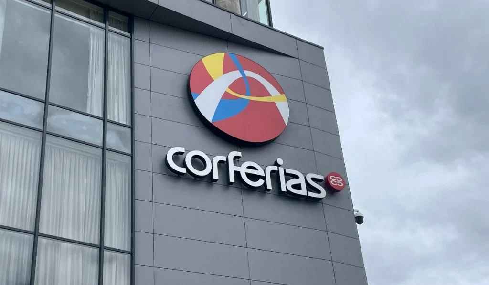
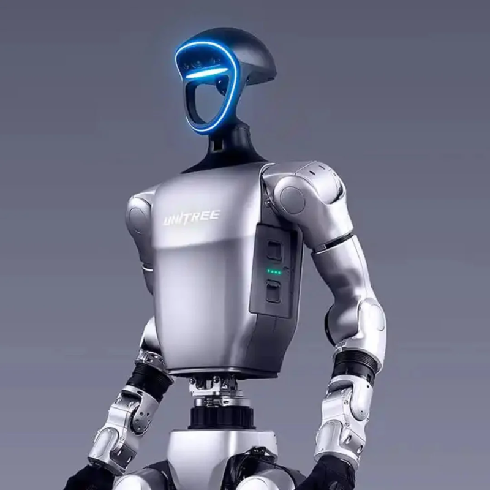

Participación en el Evento
El día viernes 8 de mayo del 2026, participamos en el evento Colombia 5.0 realizado en Corferias Bogotá. Durante la visita observamos diferentes espacios relacionados con innovación, desarrollo tecnológico, inteligencia artificial y programación.
En el evento se presentaron proyectos interactivos, robots humanoides y nuevas herramientas enfocadas en el futuro digital. La experiencia permitió conocer más sobre el avance tecnológico y la importancia de la transformación digital.
Lugar
Corferias
Bogotá D.C
Evento
Colombia 5.0
Tema
Tecnología e innovación para el desarrollo del futuro

Galería del Evento
.jpeg)



Robot Humanoide e Inteligencia Artificial
Uno de los espacios más llamativos del evento fue la presentación de un robot humanoide llamado unitree g1, enfocado en inteligencia artificial y automatización tecnológica.
Este tipo de robots están diseñados para interactuar con las personas mediante sensores, reconocimiento de voz y sistemas inteligentes capaces de responder automáticamente.
Inteligencia Artificial
Puede responder e interactuar con las personas.
Automatización
Representa avances modernos en tecnología y robótica.
Innovación
Demuestra nuevas tendencias tecnológicas del futuro.
Registro en Video
Conclusión
La visita a Colombia 5.0 permitió conocer nuevas tecnologías y comprender la importancia de la innovación digital en el desarrollo de software y la transformación tecnológica de Colombia.